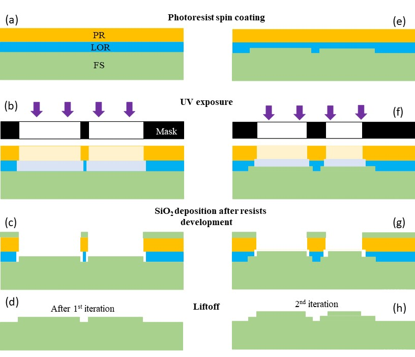

Additive fabrication of SiO2-based micro-optics with lag-free depth and reduced roughness
Hadi Amata, Qiang fu, Wolfgang Heidrich
Optic express, 2023

Standard 2^N processing for multilevel diffractive optical elements fabrication.
Each iteration creates 2-level microstructures on the previous profile by applying liftoff
lithography followed by SiO2 deposition. Repeating the fabrication cycle N times can
obtain 2^𝑁 levels DOE. PR: photoresist. LOR: Liftoff resists. SiO2: Silicon dioxide.
FS: fused silica. UV: ultraviolet.
Abstract
Ultra-thin optical components with high design flexibility are required for various applications in today's optical and imaging systems, and this is why the use of Diffractive Optical Elements (DOEs) is rapidly increasing. They can be used for multiple optical systems because of their compact size, increased design flexibility, and ease of mass production. Unfortunately, most existing DOEs are fabricated using conventional etching-based methods, resulting in high surface roughness and aspect ratio-dependent etching rate. Furthermore, when small feature size and large feature size patterns co-exist in the same DOE design, the etching depth differs significantly in the same design, called reactive-ion etching (RIE) lag. All these artifacts lead to a reduction in the diffraction efficiency of DOEs. To overcome the drawbacks of etching-based fabrication methods, we propose an alternative method for fabricating DOEs without RIE lag and with improved surface smoothness. The method consists of additively growing multilevel microstructures of SiO2 material deposited by the plasma-enhanced chemical vapor deposition (PECVD) method onto the substrate followed by liftoff. We demonstrate the effectiveness of the fabrication methods with representative DOEs for imaging and laser beam shaping applications.
Paper
Paper [Hadi2023OE.pdf ~2.10 MB]
Citation
@article{Hadi2023OE,
title={Additive fabrication of SiO2-based micro-optics with lag-free depth and reduced roughness},
author={Amata, Hadi and Fu, Qiang and Heidrich, Wolfgang},
journal={Optics Express},
volume={},
number={},
pages={},
year={2023},
publisher={Optical Society of America}
}